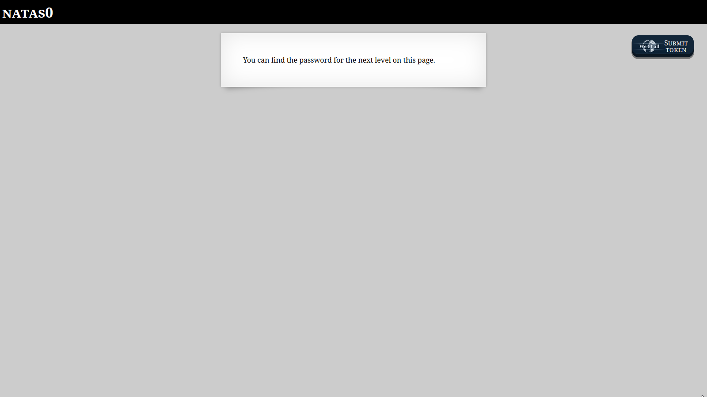
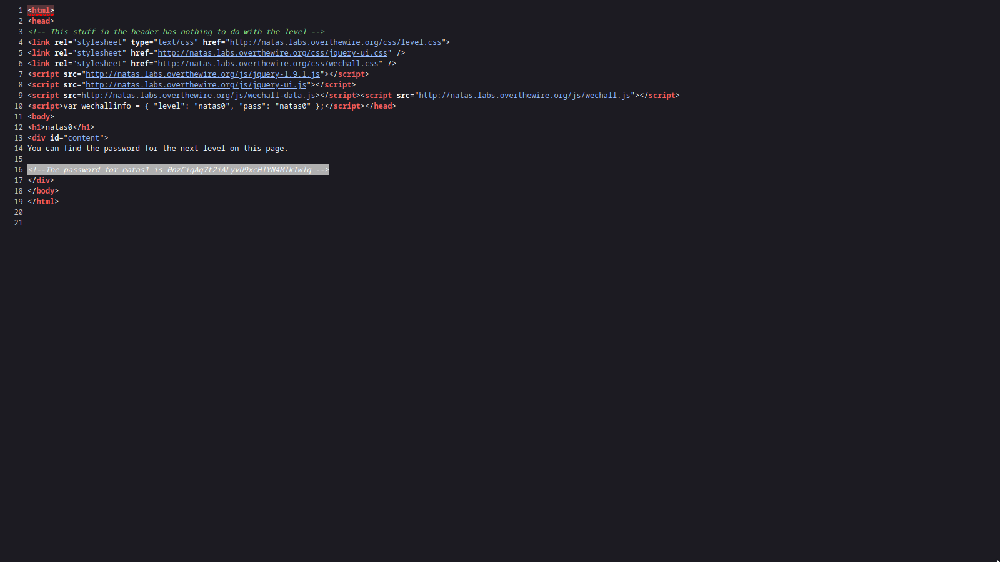

When you open the first challenge, you’re greeted with a simple message:
"You can find the password for the next level on this page."

Since nothing else is visible, it’s clear the password must be hidden in the page source.
After viewing the page source, we can see that the password for Natas1 is on line 16.0nzCigAq7t2iALyvU9xcHlYN4MlkIwlq
Back